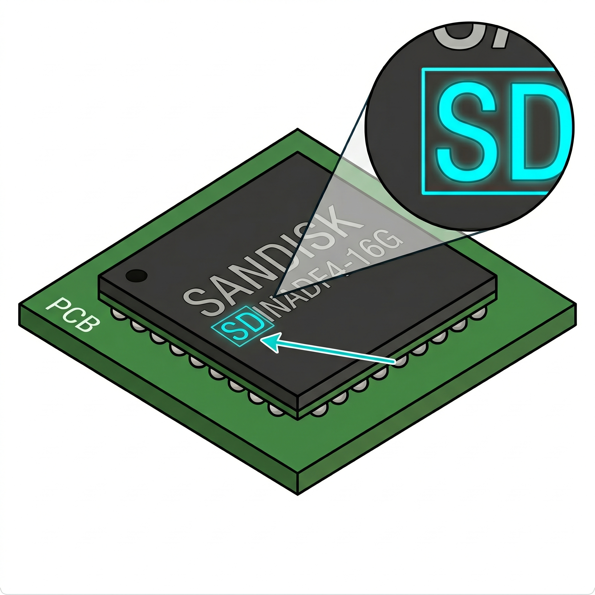

A SanDisk, que hoje integra o gigantesco conglomerado da Western Digital, é uma das marcas mais onipresentes e reconhecíveis na nossa bancada de triagem. Historicamente dominante no mercado de armazenamento em memória flash, a empresa é mundialmente famosa pela sua robusta linha comercial "iNAND", desenvolvida especificamente para suportar o intenso fluxo de dados do ecossistema mobile. Como resultado dessa popularidade global, ao processarmos lotes de eletrônicos descontinuados, o operador fatalmente se deparará com uma altíssima circulação desses componentes, especialmente ao desmontar placas de smartphones, tablets, smartwatches e outros dispositivos de armazenamento portáteis.
Felizmente, a triagem física desta fabricante é uma das mais
amigáveis, lógicas e diretas do nosso setor. A regra de ouro para
a identificação visual rápida na esteira é muito simples: a
esmagadora maioria dos Part Numbers gravados a laser no topo do
encapsulamento inicia claramente com as letras
SD (como no clássico padrão SDIN... dos
chips iNAND). Ao bater o olho nesse prefixo familiar, o técnico
obtém a confirmação instantânea da marca e da finalidade primária
do componente, dispensando pesquisas em catálogos e garantindo a
fluidez e a máxima produtividade na separação do lote.
| Tipo | Prefixo gravado no chip | Observação para triagem |
|---|---|---|
| eMMC (iNAND) | SDIN... / SDMAG... |
Linha clássica de armazenamento mobile. Frequentemente encontrados em padrão BGA 153. Bastante comuns e com boa saída no mercado reacondicional. |
| eMCP (antigos) | SD7D... |
Híbridos de gerações mais velhas (geralmente com RAM LPDDR2). Viabilidade baixa para reacondicionamento; separar pelo fluxo correto. |
| eMCP | SDEM... / SDAD... |
Híbridos mais recentes (com LPDDR3 ou LPDDR4). BGA retangular visivelmente maior. |
| UFS | SDHQB... / SDIND... |
Armazenamento serial de alta velocidade para aparelhos modernos. |
| NAND bruta | SDT... / SDZ... |
Memória flash solta (ex: SDTNR...,
SDTNS...). Alvo principal em desmontagem de
pendrives, cartões de memória e SSDs.
|
SD. Use sempre o código como
base, nunca apenas o desenho do logotipo.